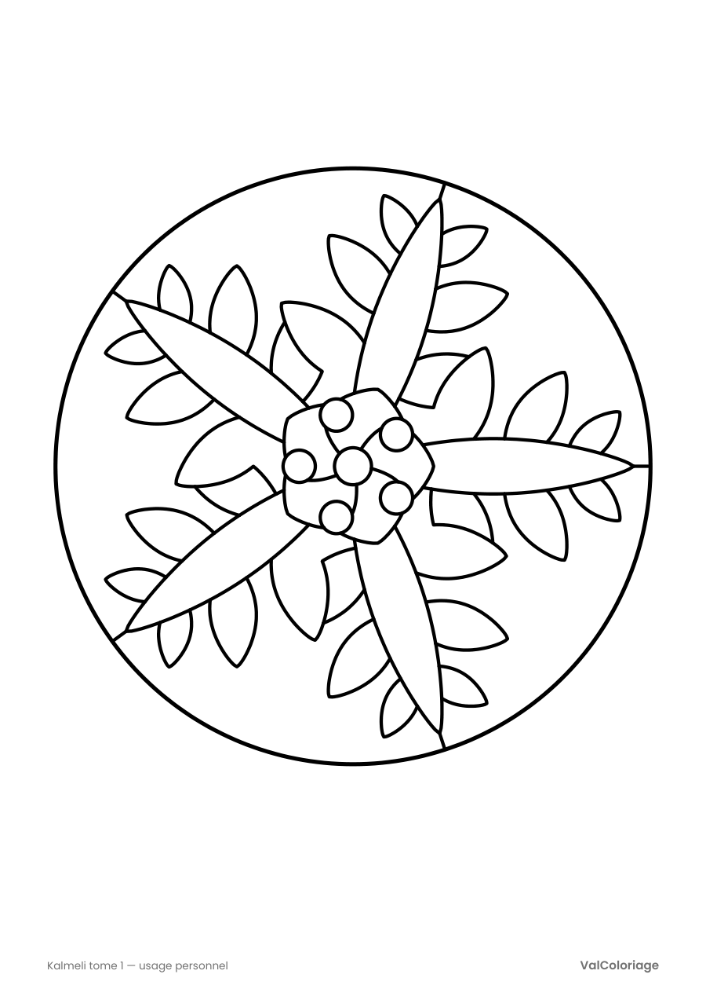

Télécharger la page
Un dessin, de grandes zones bien fermées, facile à commencer. Choisissez le format de votre papier.
Gratuit, sans inscription. Réservé à un usage personnel.
Un flocon à cinq branches, tiré de Kalmeli tome 1. Imprimez, sortez vos crayons de couleur et prenez un moment de détente.

Un dessin, de grandes zones bien fermées, facile à commencer. Choisissez le format de votre papier.
Gratuit, sans inscription. Réservé à un usage personnel.
Le premier cahier de coloriage Kalmeli : 25 dessins géométriques, des mandalas et rosaces aux motifs plus fournis, du simple au moyen. Un dessin par page, impression au recto seul.
Voir le livre sur Amazon